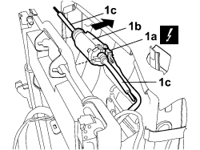

7045J26 FRONT SEAT SLIDE MOTOR, L/H OR R/H - R+R FOLLOWING ELECTRICAL WIRING CHECK
- Path
- Procedures > 70 FITTINGS > 7045 FRONT SEATS > 7045J FRONT SEAT ELECTRIC MOVEMENTS > 7045J26 FRONT SEAT SLIDE MOTOR, L/H OR R/H - R+R FOLLOWING ELECTRICAL WIRING CHECK
- Kind
- repair procedure (removal / refitting; the operation number is the code)
- Applies to
- all engines; all production periods
- Interactive page
- https://sloeber94.github.io/elrnDB-fCrm/en/#/194001114
Applies to: all engines; all production periods
 Removing
Removing
 Refitting
RefittingOp. 7045A42 GUARD (ONE) FOR FRONT SEAT, LEFT OR RIGHT - R.R.
1. Disconnect electrical connection (1a), prise out motor (1b) in the arrowed direction and recover the transmission cables (1c).
Description | Connector | |
|---|---|---|
1a | DRIVER'S SEAT SLIDING ADJUSTMENT MOTOR |
Description | Connector | |
|---|---|---|
1a | PASSENGER SEAT SLIDING ADJUSTMENT MOTOR |

Applies to: all engines; all production periods
Refitting
Removing- Fit the motor with transmission cables and connect the electrical connection.
Description | Connector | |
|---|---|---|
DRIVER'S SEAT SLIDING ADJUSTMENT MOTOR |
Description | Connector | |
|---|---|---|
PASSENGER SEAT SLIDING ADJUSTMENT MOTOR |
- Check that the motor is not damaged.
Op. 7045A42 GUARD (ONE) FOR FRONT SEAT, LEFT OR RIGHT - R.R.
Topics linked from this page (3)
- 7045A42 GUARD (ONE) FOR FRONT SEAT, LEFT OR RIGHT - R.R.
- N127 DRIVER'S SEAT SLIDING ADJUSTMENT MOTOR
- N130 PASSENGER SIDE SEAT SLIDE ADJUSTMENT MOTOR